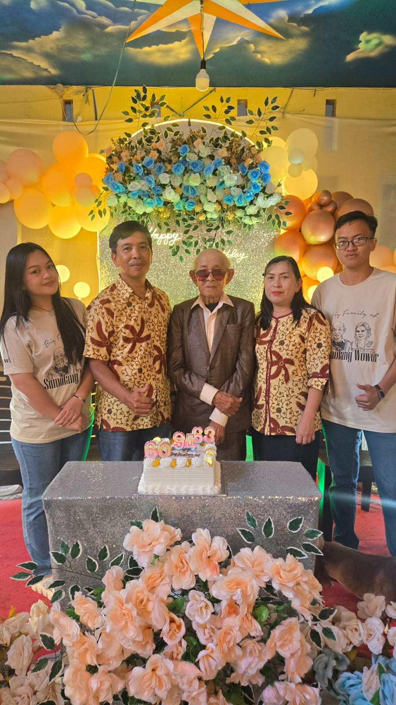

❝ A story about myself, my family, and my life journey ❞
▽ scroll down ▽Hello! My name is Dewi Christania Lumuko
I am a 4th semester student of Informatics Engineering at Sam Ratulangi University, Manado.
Currently, I am on a journey as a student who continues to learn and grow, especially in the field of technology and programming ✦
I am a simple person who enjoys learning new things and has a strong curiosity about the world around me. I am particularly interested in technology, especially programming and how technology can help improve people’s lives.
In my free time, I enjoy doing simple things such as listening to music, relaxing, and spending time with the people I love ♥

My family is a very important part of my life.
They are my home, the place where I share my stories, and where I always find support in every situation. In every step I take, my family becomes my greatest source of motivation and strength.
I believe that without my family, I would not be who I am today. They have taught me the meaning of love, patience, and hard work ❀
Click to discover more about me
A song that I’m vibing with lately
Maria Shandi — Hanya Anugerah
♫ press play to listen along with me
Thank you for visiting my little corner of the internet. I hope you enjoyed getting to know me ♥